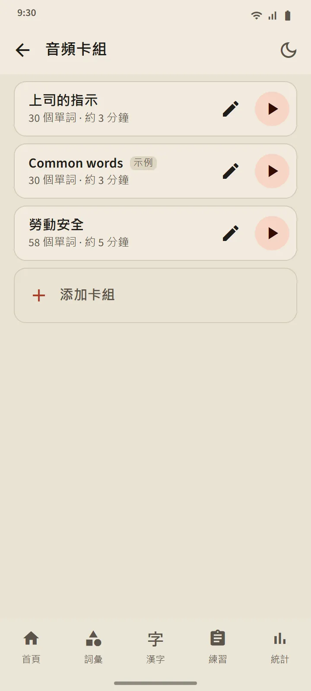

自己建立的音頻卡組
建立一個包含 5 到 100 個單詞的卡組：可以逐個搜尋，也可以從任一詞彙卡組中批量添加。播放器先用日語朗讀每個單詞，再用應用程式語言朗讀它的詞義（關閉「朗讀詞義」則只讀日語）。當前單詞會連同振假名大字顯示；點按列表中的單詞即可跳轉到它。
控制功能：隨機播放、重複，以及 0.75×、1× 或 1.25× 的語速。屏幕熄滅或切換到其他應用程式時，播放器仍會繼續播放；播放器通知和耳機按鍵依然可以控制播放。
- 免費版：3 個卡組。Premium：不限數量，並且一個卡組可以下載為一個音頻文件（M4A）。
- 系統會根據最常用的單詞自動創建一個示例卡組「Common words」；你可以隨意編輯或刪除。
- 聽音頻不會改變單詞的複習安排或階段。


口語練習：説出來，然後繼續
你已「記住」或「掌握」的單詞會出現在卡片上；麥克風會自動開啓，你説出這個單詞，如果手機識別出來，就會出現下一個。如果沒有識別出來，屏幕會顯示它聽到的內容並再次聆聽；三次嘗試後會播放示範發音。麥克風按鈕、示範按鈕和「跳過」始終都在。每次練習有 5、10、15 或 20 個單詞。
你的聲音由手機的語音識別服務（通常是 Google 的）處理；應用程式不會錄製或儲存。只判斷單詞，不判斷你的口音。由於語音識別可能聽錯，這項練習絕不會降低單詞的階段。

書寫漢字：一筆一畫
適用於你已「記住」或「掌握」的漢字。頁面只顯示釋義和讀音；你在一個佔滿寬度的書寫框中書寫，每一筆在手指抬起時都會被檢查：形狀、方向和順序。正確的筆畫會吸附為標準形狀；順序錯誤或方向顛倒的筆畫會被拒絕，並用一句話説明；錯過兩次後，下一筆會連同起點淡淡地顯示出來。
- 憑記憶：空白的書寫框。帶描影：漢字淡淡地顯示出來，用於熱身。按順序點擊：完整顯示漢字；按順序點擊它的筆畫。
- 動畫按鈕可以隨時播放整個漢字的書寫過程。
- 在兩個不同的日子都不借助提示、憑記憶寫出某個漢字後，它就算已會寫；每次練習 5、10 或 15 個漢字。


處處都有發音
詞彙卡片、漢字卡片、單詞詳情、假名課程、語法例句和聽力題，都由手機的日語文字轉語音引擎朗讀，因此無需下載任何音頻文件。音質取決於各手機自帶的引擎。